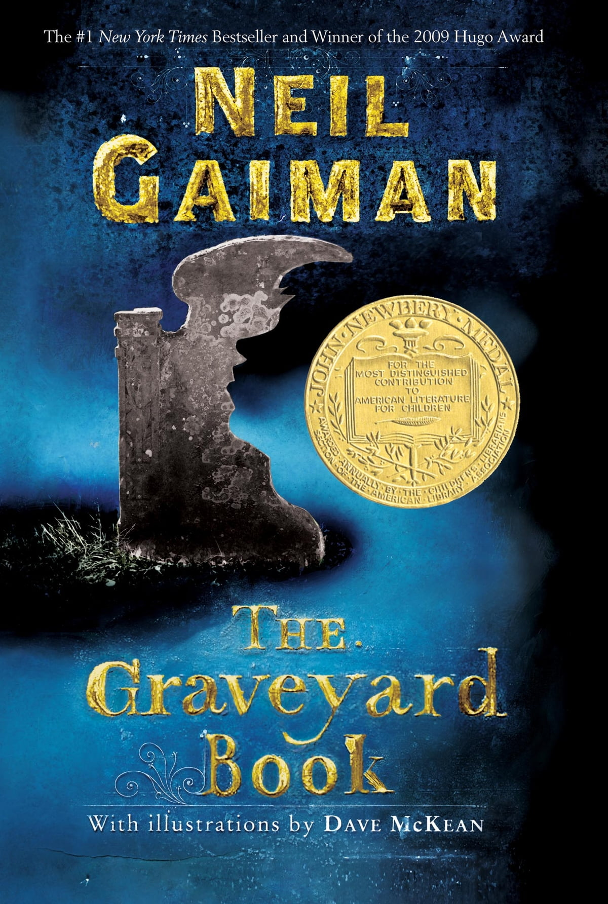

Author: MADELEINE L'ENGLE
“You mean you are comparing our lives to a sonnet? A strict form, but freedom within it?” “Yes.” Mrs. Whatsit said, “You’re given the form, but you have to write the sonnet yourself. What you say is completely up to you.” (A Wrinkle in Time: p.219)
According to Mrs. Whatsit’ saying, a man’s life is as a sonnet. A sonnet has a strict format, but somehow freedom exists in it. The comparison is perfectly depicted by the character. A person’s life is innately destined by fate. For instance, a person cannot choose to be born in neither a rich family nor a poor one. He neither can decide to look like Brad Pete as he wishes. It seems like humans are bound in the blue print of their lives; they are incapable of doing anything beyond their control. However, it is a false notion to ever think about. It may be true that there are “some things” a person can never change, such as biological facts, family, and socio-economic status. But as Mrs. Whatsit said, a sonnet has freedom within it, and we are given “a form” to write our own one. Though lives cannot always be what a person’s expectation, he still is capable of composing his own one. The quote is meant to express the notion of being your own life designer. Even though a person cannot change the reality, he can change the possibility. And it is all up to him.
Author: Neil Gaiman
“Can’t I stay here? In the graveyards?” [said Bod] “You must not,” said Silas, more gently than Bod could remember him ever saying anything. “All the people here have had their lives, Bod, even if they were short ones. Now it’s your turn. You need to live.” (The Graveyard Book: p.302)
Well, Nobody Owens, who used to be that bizarre and melancholy little boy, now has become an adolescent being able to explore the world on his own. Bod (Nobody Owens) always had a strong desire to explore the unknown at the young age, and he felt like a raven-in-the-cage, who was clever enough to explore, but was bound by his Guardian Silas. However, reality is not usually as what we expect. At the young age, children are great explorers and are always eager to overcome the world on their own- they want to be freed from their parents in order to gain the independence. Nevertheless, as children grow up and finally escape from “the control,” they somehow gain the terrifying feelings of becoming independent. As for their parents, struggling with the similar condition, but finally they will decide as what Silas did to Bod- Now it’s your turn. You need to live. (p.302)